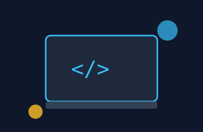

Ashley Ncube
What I Do
I work as a Registration Support Agent at BYU Pathway Worldwide, helping students navigate enrollment and stay on track toward their goals. Before that, I worked in quality assurance and as an indexing specialist, so I've spent a lot of time thinking about clear processes, accuracy, and helping people succeed.
Why I'm Learning to Code

I'm studying Web and Computer Programming at BYU-Idaho because I want to build tools that make everyday work easier, from small dashboards to full applications. This course is my starting point for turning ideas into real, working websites.